"Rios de sangue não trazem a paz, mas trazem a obediência"
apsd
 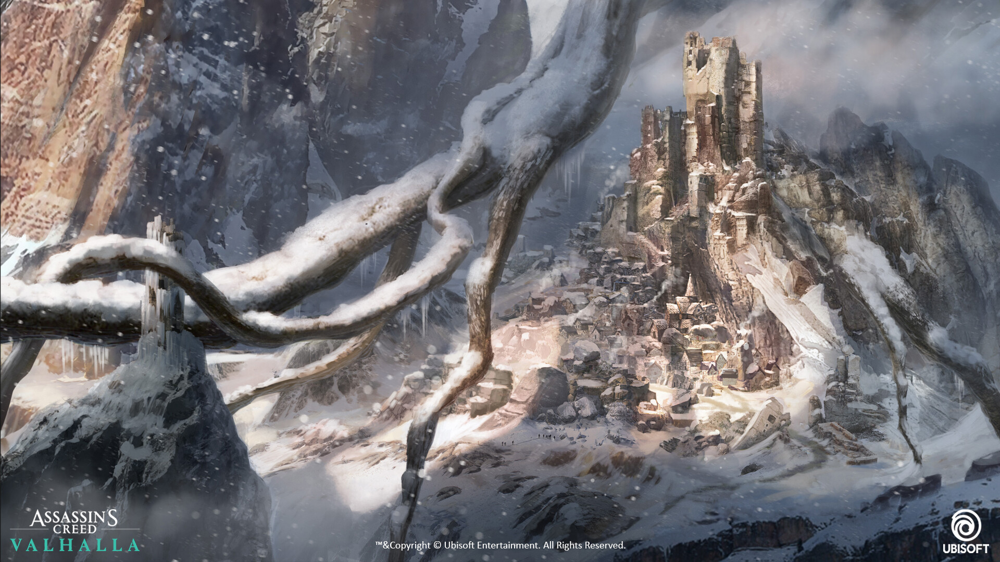
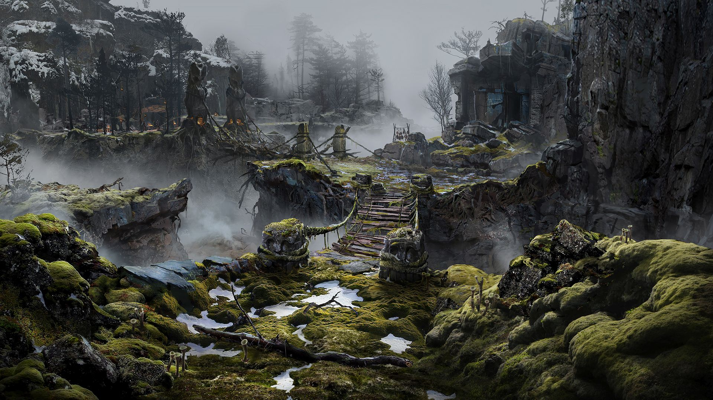
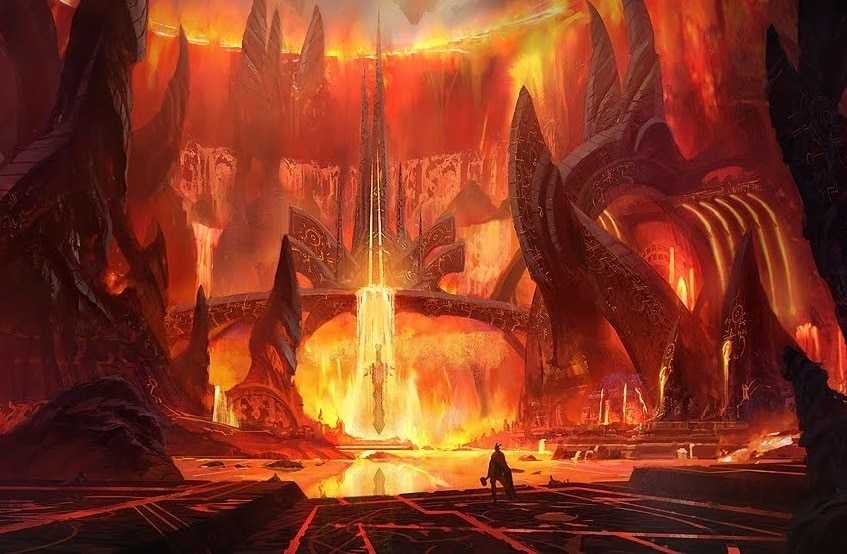
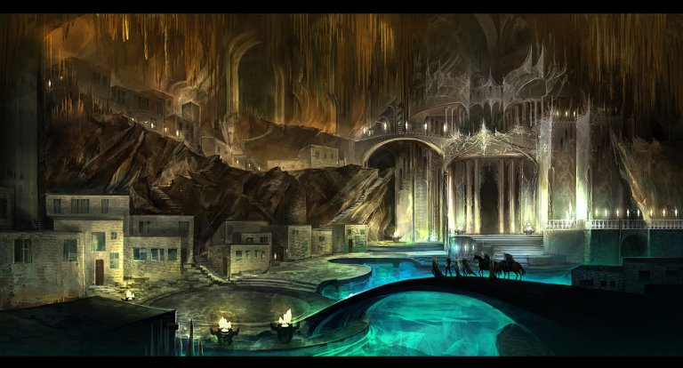
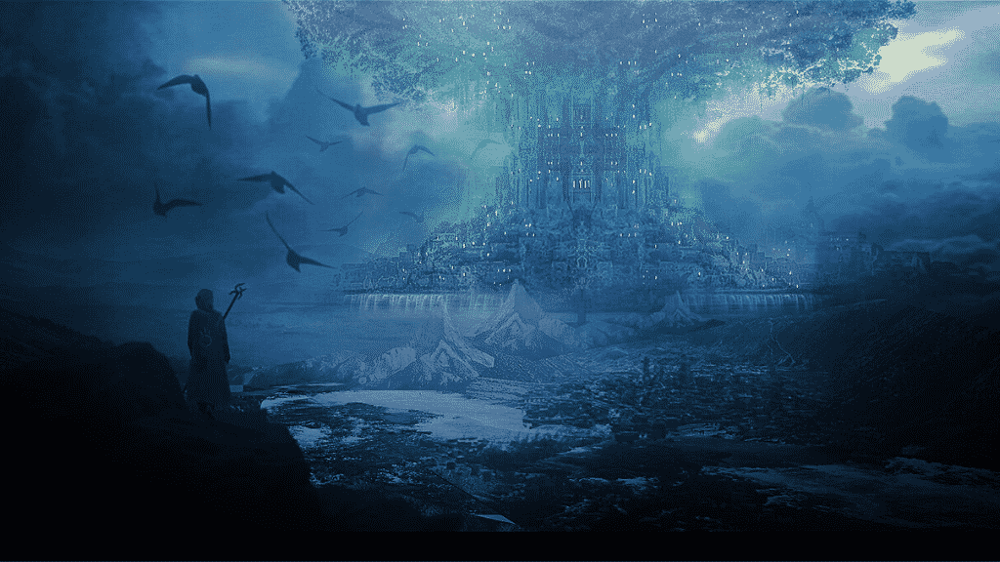
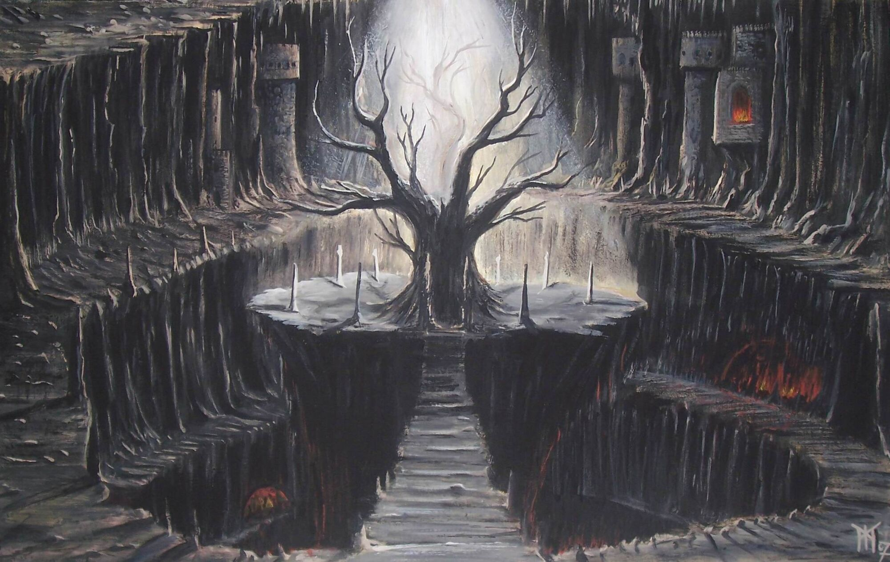
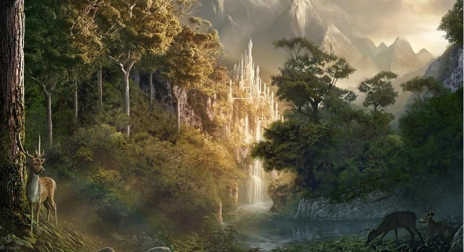
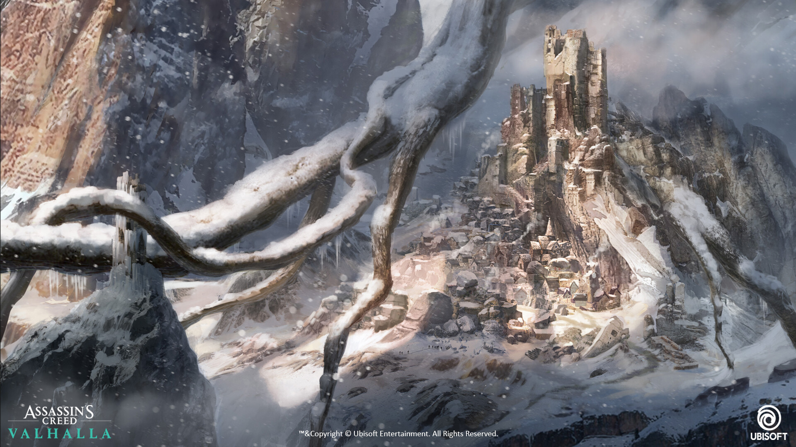
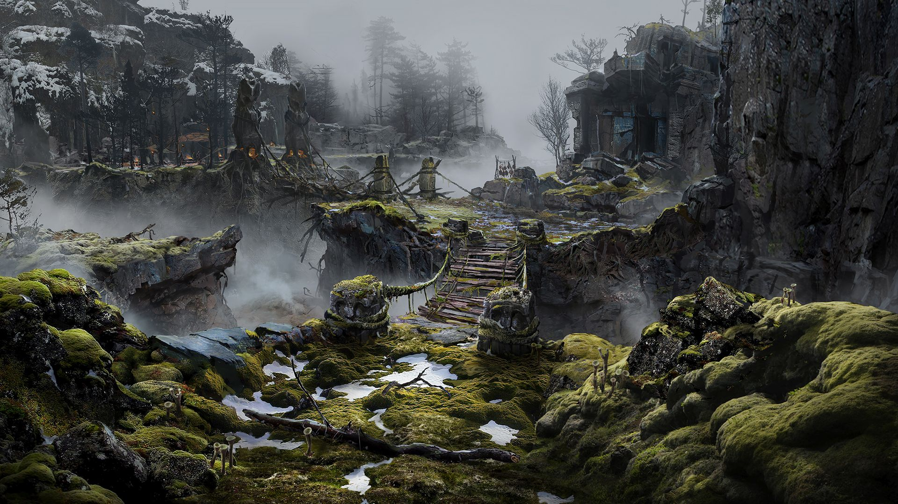
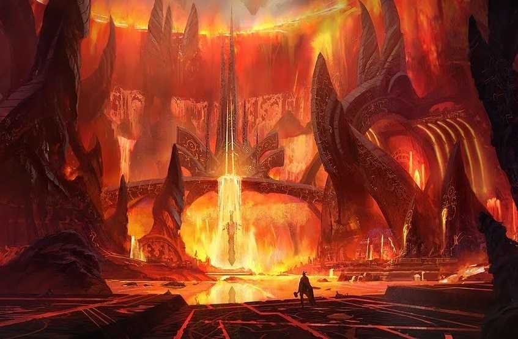
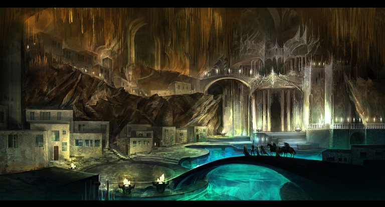
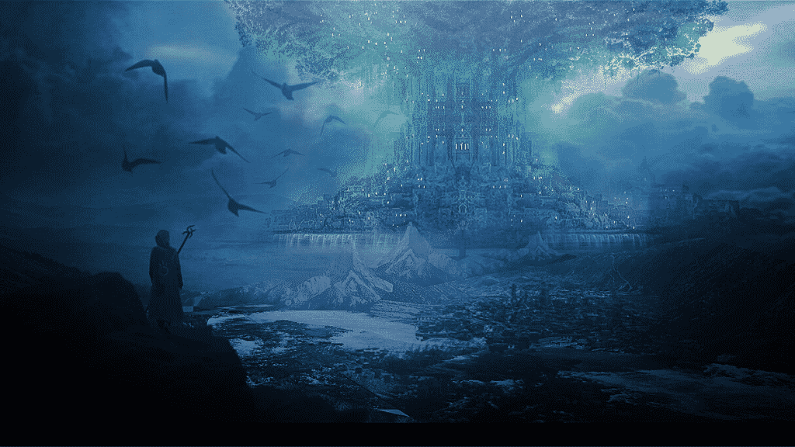
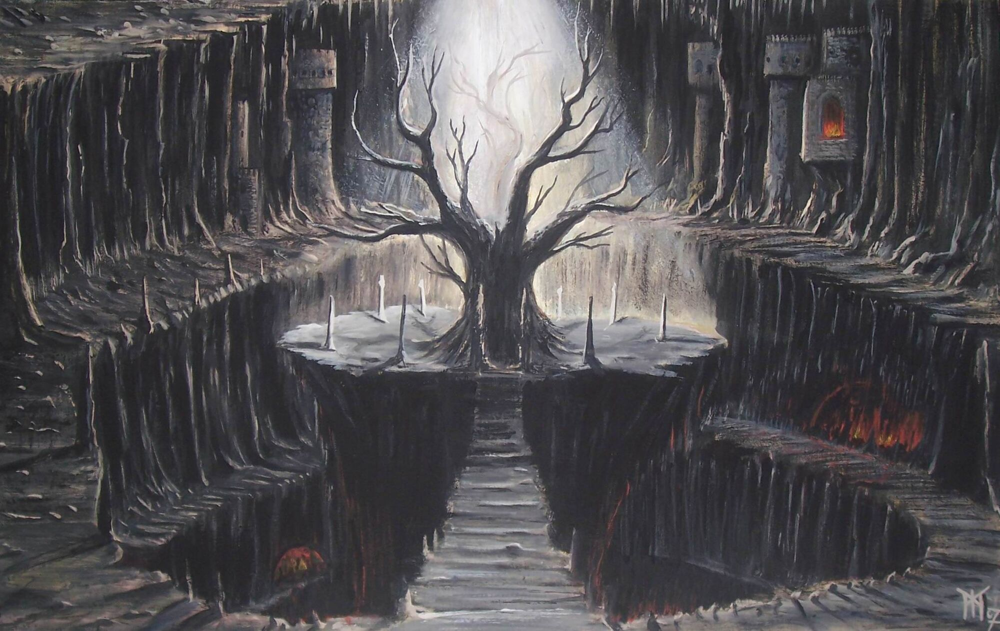
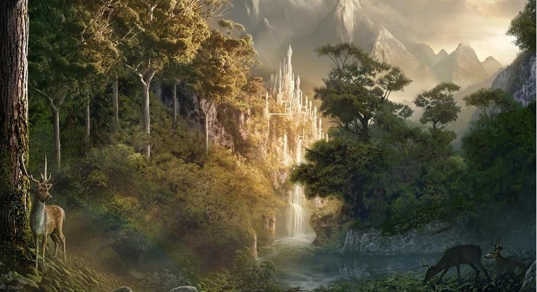
Os nove reinos
O cosmos, conforme descrito na mitologia nórdica, é muito diferente do universo como o entendemos hoje.
De acordo com os contos nórdicos, o universo é composto de nove reinos, um para cada uma das raças de seres:
deuses, gigantes, homens e muito mais.
Curiosidades
O mundo dos deuses nórdicos foi criado com “partes do corpo”
Antes de tudo isso existir, não havia nada além de um abismo vazio chamado Ginnungagap. O espaço era ocupado por Niflheim e Muspelheim, reinos do gelo e do fogo, que colidiram um com o outro e formaram Ymir, aprimeira criatura viva do universo. Ymir foi o ancestral de todos os Jotun, raça dos gigantes, e deu origem aos demais seres da mitologia. Ocorreu uma guerra e após matarem Ymir, eles transformaram cada parte de seu corpo: a pele passou a ser a Terra, seu crânio o céu, os cérebros viraram nuvens e o sangue passou a ser o mar. Ossos e dentes, por sua vez, formaram as rochas de todo o universo..
A origem do martelo de Thor foi “culpa” de Loki
Certa vez, Loki pensou que seria cômico raspar a cabeça da esposa de Thor, enquanto ela dormia. Thor ficou bravo e Loki disse que conseguiria novos cabelos para ela. Loki duvidou de suas capacidades, e eles para agradarem aos deuses, resolveu dar mais coisas. Dentre elas, o martelo do Thor.
Odin arrancou o próprio olho
Em sua busca por conhecimento sobre todas as coisas, Odin acreditava que a inteligência valia qualquer preço e às vezes era preciso fazer sacrifícios.
Gigantes x Deuses
Os gigantes eram grandes inimigos dos deuses. O ódio mútuo entre deuses e gigantes tornou-se claro desde o início dos tempos.
Principais deuses
Odin
- Odin Borson
- Pai de Todos, Wotan, Woden
- Asgard
- Æsir (Asgardiano)
- deus da sabedoria e da cura
Em resumo, ele era filho de Bor, neto de Buri; e Bestla, uma gigante. Odin também tinha dois irmãos, Vé e Vili, que deram de presente para os humanos dons de fala, emoções, e outros. Eles, em suma, criaram o mundo na mitologia nórdica.
De forma geral, Odin teria adquirido sabedoria depois de oferecer um de seus olhos para Mimir, o guardião. Com isso, ele pôde, então, beber o líquido do poço mágico e adquirir o conhecimento. A partir disso, ele podia ver tudo que acontecia nos nove mundos mitológicos.
Além disso, após se ferir de propósito, ele se pendurou por nove dias nos galhos da árvore Yggdrasill. Esta, tinha um grande conhecimento.
Freya
- Freyja ou Freiac
- A Bruxa da Floresta
- Asgard
- Æsir (Asgardiana)
- deusa do amor, fertilidade, riqueza, magia, guerra, etc
Freya é a deusa do amor, cujo nome significa ‘senhora’, ela está associada à beleza, feitiçaria, fertilidade, luxúria, beleza, ouro, guerra e inclusive a morte. Ademais, a deusa Freya possui grande afeição por jóias, usa de sua beleza para consegui-las quando as quer. Freya vive em Asgard com outros deuses guerreiros, mas, inicialmente a deusa pertencia a outro clã de deuses, os Vanir, conhecidos como deuses da fertilidade e feitiçaria. (Asgard) e os Vanirs, como símbolo de paz entre os clãs, Vanir envia Freya, seu pai e seu irmão para viverem em Asgard. Da mesma forma, Aesir enviou outros três deuses para Vanir. A deusa Freya também é a líder das Valquírias, mulheres responsáveis por conduzir as almas dos guerreiros mortos em combate.
Thor
- Thor Odinson
- Filho de Odin
- Asgard
- Æsir (Asgardiana)
- deus do trovão, das tempestades e da agricultura
Thor (filho de Odin e Frigga) foi o deus nórdico do trovão (por isto representava a força da natureza), talvez o mais popular deus da mitologia nórdica. Ele tinha um martelo chamado Mjolnir (o destruidor), feito por anões das cavernas subterrâneas, com o qual dominava o trovão. Cada vez que Thor lançava seu martelo, a fim de desferir seu poderoso golpe, este voltava pra sua mão como um bumerangue. Além disso, Thor também tinha um cinturão mágico (Megingiord) que duplicava sua força e que, sabidamente, era muito grande.
Frigga
- Frigg, Frija, Frea ou Frige
- Mulher de Odin
- Asgard
- Asynjor
- deusa da fertilidade
Frigga é a deusa da fertilidade e mulher de Odin. Frigga é representada como mãe, guerreira e sábia que conhece os segredos dos homens, mas não os revela. Seus símbolos são a roca, o fuso e as chaves, que significam a duração da vida e a sabedoria. Quando os guerreiros morrem em combate, as Valquírias escolhem aqueles que irão para Valhalla, junto a Odin, e a outra metade ficará em Folkvang, perto da deusa. Ali, passarão o resto dos dias exercitando-se e participando de alegres banquetes, até o fim dos tempos, na Batalha de Ragnarök.
Loki
- Loki Laufeyson
- Dono da trapaça
- Jotun
- Jötunn(que pertence)
- deus do fogo, da trapaça, magia e da travessura
Loki é um deus, ou um jotun (gigantes que se opõem aos deuses), filho de Farbanti e Laufey, irmão de Helblindi e Býleistr. É o deus do fogo, da trapaça e da travessura, está também relacionado à magia, podendo assumir forma que quiser. Ele não faz parte dos Aesir (o clã de deuses que residem em Asgard), apesar de viver ali. É geralmente visto como um grande símbolo da maldade e da trapaça, e, embora suas artimanhas geralmente causem problemas a curto prazo aos deuses, estes frequentemente se beneficiam com elas no fim. É notadamente uma das figuras mais profundas, representativas e complexas da Mitologia Nórdica.
Hel
- Hela (Hel ou Hell)
- Filha de Loki
- Helgardh
- Força, velocidade, resistência e imortalidade e cura
- deusa do reino dos mortos
Hel nasceu com a metade de seu corpo perfeita, aparentando uma linda mulher, já a outra metade era de um corpo terrivelmente em decomposição. E como os Aesir de Asgard não toleravam a aparência repugnante da filha de Loki, Odin para atender aos pedidos de seus súditos ordenou que Hel fosse responsável pelo Mundo Inferior que recebeu seu nome, Helheim, que fica nas profundezas de Niflheim. Lá, recebeu o poder de dominar nove mundos ou regiões, onde distribui aqueles que lhe são enviados, isto é, aqueles que morrem por velhice, doença, morte natural ou de forma indigna em batalha. Como agradecimento por fazê-la governante do Mundo Inferior, deu a Odin os seus dois famosos corvos Hugin e Munin, que são os mensageiros entre os reinos.